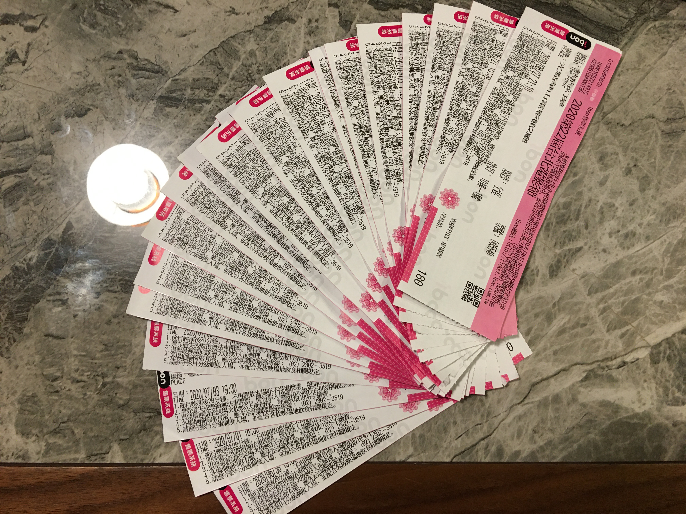

Tags: movies and stuff

這次北影真的是卯起來狂看，十幾天下來看了總共二十四部電影，看到眼脫窗
6/26
非法跟監
蠻鳥的。
★★
6/27
熱病幻夢
看不太懂，不過某些地方感覺還不錯。
★★☆
這不是一場葬禮
～宗儒國認定本屆最佳影片～
★★★★★
1917 迷走莫三比克
還行。
★★★☆
春江水暖
就當你以為故事講得差不多了的時候，就會又再繼續開展一段其實不講也不會怎麼樣的情節，有點煩。那個江光看著也好像沒比醉月湖乾淨多少吧？
★★☆
6/28
夢遊潛水艇
我覺得這部趙正媛應該會覺得普普通通，但我蠻愛的。
★★★★
阿伊努之森
喜歡黃金神威跟 Oki Dub Ainu Band 的應該都會覺得這部蠻有共鳴的吧？
★★★★
下落
結尾太屁了，但前面還算好看。
★★★
人工失格
糞作，為什麼我要待完全場…
☆
凝視蕾妮瑪莉佛森
Empowering documentary.
★★★★
6/29
一日談
小說的前百分之九十篇幅也像電影裡面的一樣悶嗎？這場我坐不太住。
★★☆
6/30
光榮之路
Kubrick 早期的片（算吧），還算行吧。
★★★☆
7/1
死神二十來敲門
本來以為這是這一天看過最好的了，結果不是😅
★★★★
拾魂
非常好看，本屆第三名。
★★★★☆
7/2
麥肯齊金總理密史
普普通通，沒有想像中的有趣。
★★☆
7/3
千面惡魔
前面一半都被我睡掉了，真的是睏到爆… 但後半本身也足夠好看了，希望以後有機會可以整個再看過一遍！
★★★★☆
7/4
穿越時空的少女
老實說有點亂演，但整個效果做得還不錯。散場的時候有聽到其他觀眾在聊天，在聊為什麼星際大戰特效的品質做得比這部好上好幾個層級，我是沒看過曙光乍現啦… 但美國那時候應該比日本有錢很多吧？
★★★☆
敬！咆哮二十
我猜一般來說應該不會喜歡這種好像也沒有什麼重點的片吧？但我是很愛就是了。
★★★★
7/5
無名之歌
中間男同志的 love line 有點沒頭沒腦，其他的都真的是做得非常好。
★★★★
暗夜啟示錄
我到底看了什麼？
★★
7/6
後人類傳說
難看得要命… 電影是從 193X 年的小說改編過來的，但整個被搞得很解。配的後搖 / 環境音樂也沒有讓整部片變得更有張力，只是更煩而已。想說這電影真的是爛死了，結果看完片尾才發現導演的確是過世了… but still.
★
7/7
人魚祭
馬馬虎虎，不太懂整個調成黑白的用意是什麼？
★★☆
7/8
天外奇機
有些地方ㄎㄧㄤ得很猛，有些地方看不懂。如果有懂安哥拉歷史的應該會看得懂吧？另外就是那些壞掉的冷氣到底哪裡來的…
★★★☆
7/9
大林宣彥：電影藏寶盒
腦洞大開，另外卡司非常的豪華。
★★★★☆
結論是真的很累，不過光點在公司旁邊這點導致週間的場次不太需要趕場，還算不錯。另外這兩週也是光顧了啤酒土狗蠻多次，他們的酒真的都進得不錯，也是很推。
Comments